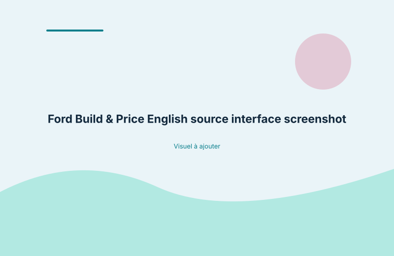
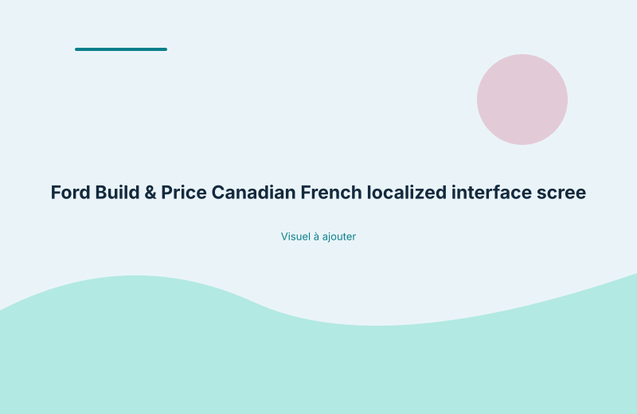

Linguistic case study · Automotive localization
Localizing an interactive vehicle-configuration experience from US English into Canadian French, with attention to automotive terminology, pricing information and interface constraints.
Build & Price brings together vehicle filters, configuration choices, model specifications, starting prices and legal disclosures. The language across these elements needs to remain consistent while helping Canadian French-speaking users understand the information presented at each step.
The assignment covered 50,284 words delivered in three batches. The work required attention to terminology, readability and the way individual pieces of content fit into the wider interface.
The Challenge
The assignment involved a connected user journey rather than a collection of unrelated strings. Wording and terminology had to remain consistent across vehicle filters, specifications, pricing content and legal disclosures, while reading naturally for a Canadian French audience.
Scope of Work
I localized the interactive Ford Build & Price experience from US English into Canadian French. The work focused on automotive terminology, clear and natural wording, and consistency across the interface as a whole.
The paired screenshots show examples of the English source interface and its Canadian French localization. They illustrate selected parts of the experience rather than every available screen or interface state.

English source interface

Canadian French localized interface
This project called for more than sentence-level accuracy. Terminology, commercial readability, interface space and continuity between related elements all had to be considered together.
The aim was to produce Canadian French content that fit the interface and read as part of a coherent user journey, rather than as a series of separately translated fragments.